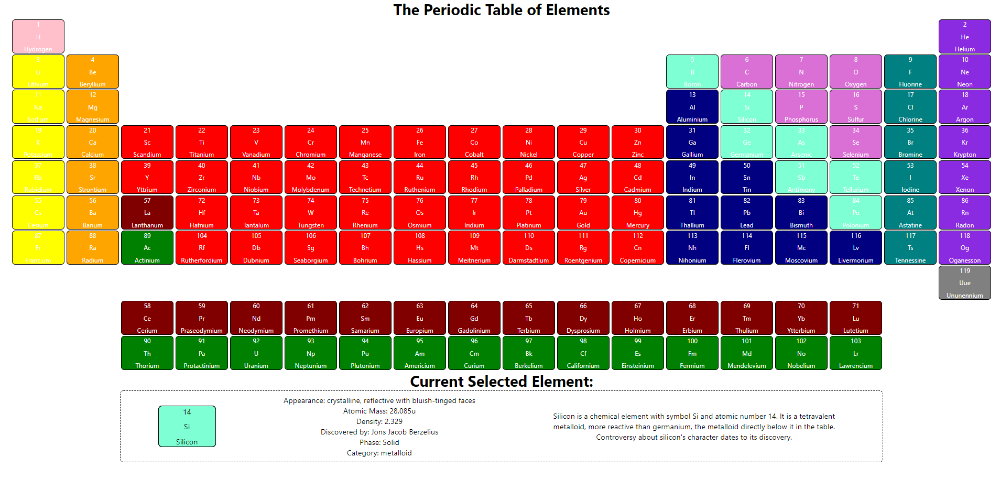
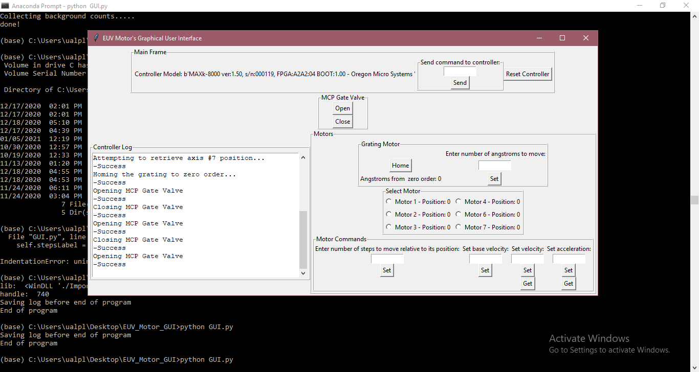
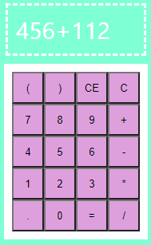
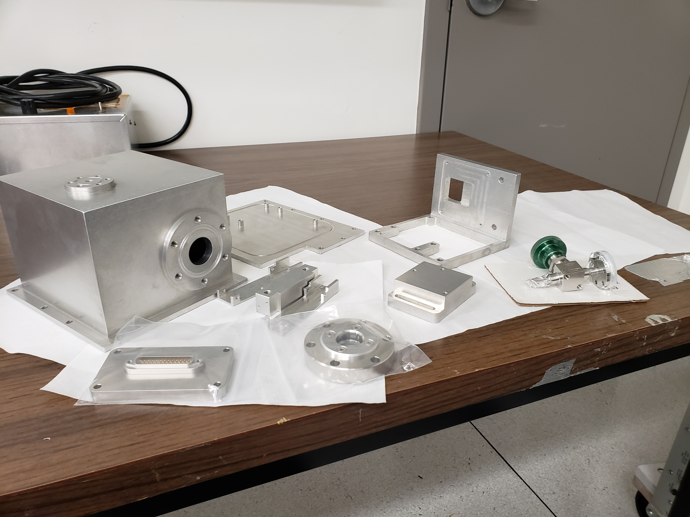

Personal and Work Projects:
Interactive Periodic Table
Description:
This is an interactive periodic table that was made with React.js. When one of the elements is clicked on, it displays its properties and summary below.
Download
Fictional Restaurant Bakery
Description:
The purpose of this personal project is to further demonstrate my knowledge of HTML and CSS.
Earthman's KitchenFourier Transform Code
Description:
This Python code takes a .FITS image and properly performs a fourier transform on it but this one I wrote for work incorporates more steps. This modified code works with a set of three Rubidium interferograms that would be transformed and plotted to calculate the resolving power of the instrument used to capture it. Before the images are transformed, they are filtered through the instrument's white light flat and debiasing images to help reduce noise in the image. Afterwards, they are cropped so that only the image is interferogram. Once the interferogram has been cropped, it is then filtered again through a median filter. The code then determines the average pixel value in the image and subtracts every pixel by that value to further filter. Finally a Hanning Window is applied to the interferogram and then the transform is applied. The transform is then displayed and what should be seen in first and fourth quadrants of the image are two bright areas symetric of each other which in theory are the Rubidium lines: 6298.3252Å and 6299.2245Å. The code then looks for the row in the fourth quadrant these areas are located, plots them, and calculates the resolving power of the instrument that was used.
Download
EUV Grating Stepper Motor GUI
Description:
The goal of this project was to create a GUI in Python that would talk to a motor controller in order to operate seven different alignment motors, one of which operating the grating, in our EUV tank in the lab as well as open and close a gate valve. The functions for the motor controller that were supplied had been written in C so they had to wrapped in Python accordingly. The motors move in steps except for the grating which is entered in angstroms and then converted to steps for our ease of use. Due to the reason that the position of this motor had to be calibrated before use, the user must home the grating, or set it to zero order, before being able to move it to ensure it always starts in the same place before moving. At the end of the program when the user exits the window, the log will be saved to a file with a time stamp for the next user.
Download
Calculator App
Description:
This is a calculator app made with React.js.
Download
Ultra High Vacuum Housing For EMCCD
Description:
This was a mechanical design that I designed for work in the lab. When I first took on this project, the goal was to create a mount for a EMCCD (Electron Multiplying Charged Coupled Device) provided by the Jet Propulsion Laboratory so that it could be flown on our sounding rocket and act as a additional camera to capture Lyman Alpha light. Specs that I had to keep in mind at was that it had to be light weight as to not add much weight to the rocket, it must be strong enough so that it can withstand the rocket's launch and landing impact, the design must account for resonance frequencies to avoid breaking and rolling around the rocket during launch, it had to be able to mount on existing holes within the rocket, and there needed to be room to fit the cryo-cooler and be able to move it back and forth. In the process of designing, it was decided that this mount was to be portable and hold vacuum outside of being inside the rocket. This design change brought on several specs to now take account for while maintaining the previous ones. These additional specs included placing an Aluminum dome over the entire mount that is sealed with a rubber gasket to hold vacuum, adding a valve to top of the dome to suck out inside air and seal it, placing a vacuum compatible 25-pin connector on the back to read out the EMCCD data and control its cryo-cooler,and adding a high-vacuum copper flange viewport to hold a one inch Magnesium Fluoride window allowing Lyman Alpha light to pass through. An additional piece would need to be made that attaches to the 'L' shaped CCD board holder to dampen resonance frequencies and avoid breaking under the dome. Unfortunately, the camera was unable to be piggy-backed on its targeted launch and remains in the early testing phase.
